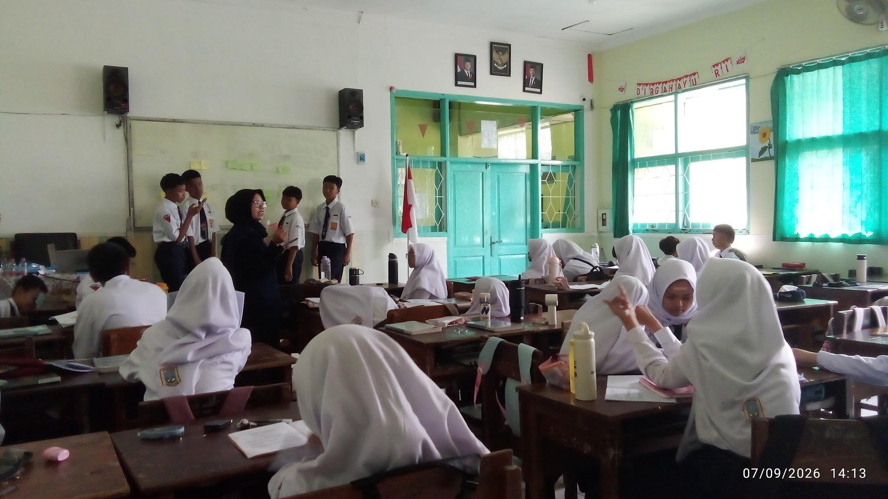
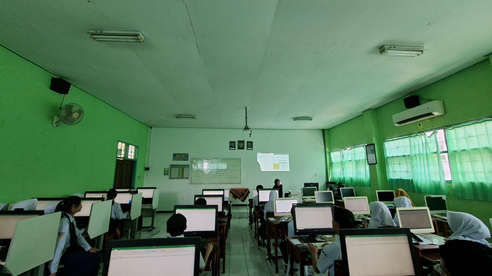
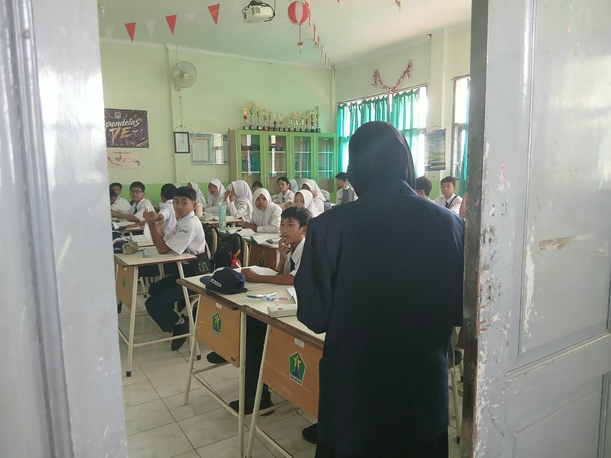
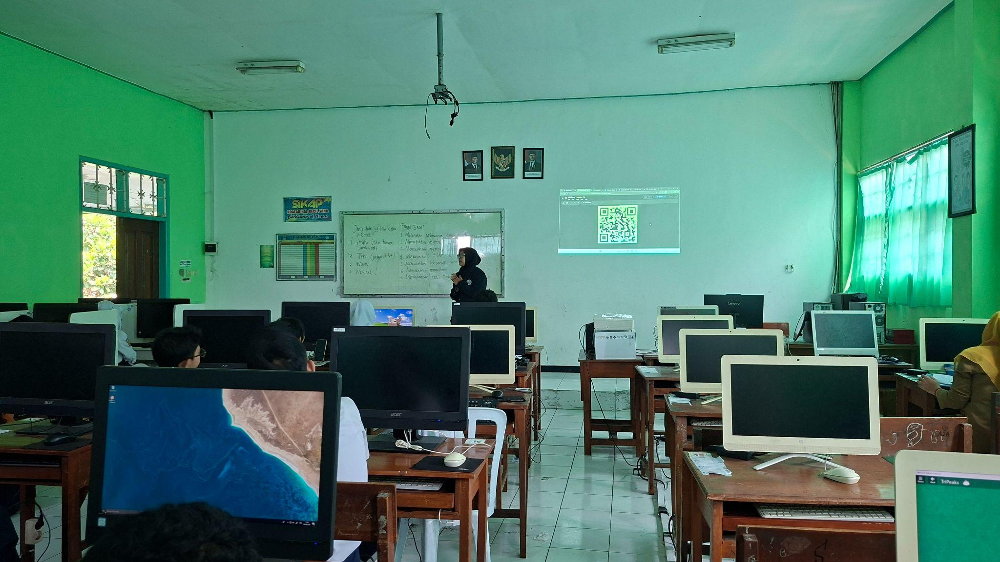
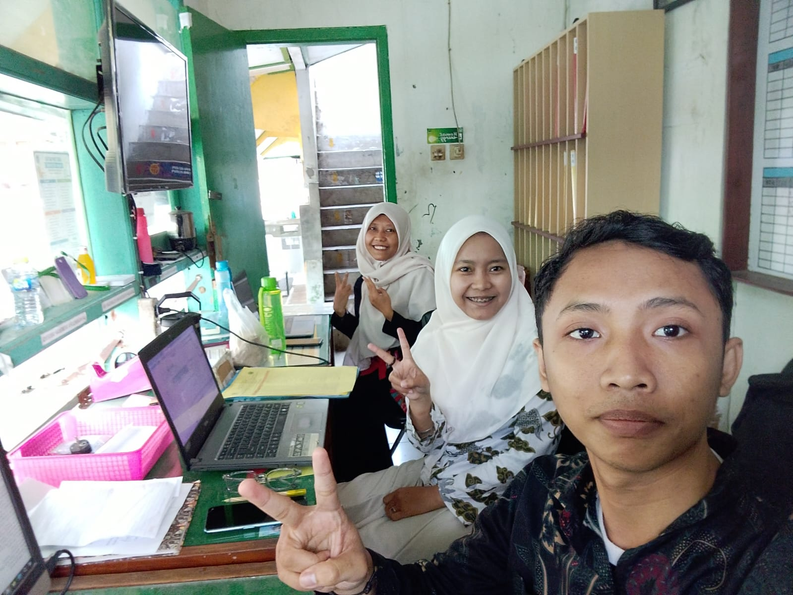

Deskripsi Kegiatan Mingguan
PPL PPG Calon Guru Pendidikan Teknik Informatika Gelombang 1 Tahun 2026
SMPN 18 Malang
Minggu 8
Nama : Siska Yulia Rahmawati
NIM: 253153743918
Hari/Tanggal |
Deskripsi Kegiatan |
Refleksi |
Senin, 7 September 2026 |
Upacara Take video untuk matkul PSE di kelas 7D |
Upacara dan mengambil video PSE di kelas 7D mengajarkan saya tentang persiapan, keberanian, dan evaluasi diri. Pengalaman ini mengasah keterampilan mengajar saya sebagai calon pendidik. |
Selasa, 8 September 2026 |
Praktik Pembelajaran Mandiri di kelas 8H Piket rekap absen |
Praktik pembelajaran mandiri di kelas 8H mengajarkan saya tentang keteladanan dan kesiapan mengajar. Saya belajar membangun suasana positif sebelum belajar serta meningkatkan kualitas pengajaran secara bertahap. Pengalaman ini memotivasi saya untuk terus memperbaiki diri sebagai pendidik. |
Rabu, 9 September 2026 |
Standby di ruang piket Praktik Pembelajaran mandiri di kelas 8G |
Kegiatan standby di ruang piket mengajarkan saya tentang kedisiplinan dan kesigapan dalam pelayanan sekolah. Saya belajar berinteraksi dengan berbagai pihak secara komunikatif serta membantu menjaga ketertiban lingkungan belajar. Pengalaman ini memotivasi saya untuk terus meningkatkan rasa tanggung jawab dan kepedulian sebagai seorang pendidik. Praktik pembelajaran mandiri di kelas 8G mengajarkan saya tentang keteladanan dan kesiapan mengajar. Saya belajar membangun suasana positif sebelum belajar serta meningkatkan kualitas pengajaran secara bertahap. Pengalaman ini memotivasi saya untuk terus memperbaiki diri sebagai pendidik. |
Malang, 9 September 2026 |
|
Guru Pamong
Ratna Agustyasari, S.Pd. NIP. 19890802 2019022001 |
Mahasiswa PPG Calon Guru Gelombang 1
Siska Yulia Rahmawati NIM 253153743918 |
Kepala Sekolah SMP Negeri 18 Malang
Mohammad Amrozi Hamidi, S.Pd., M.M NIP. 19681102 199203 1005 |
Lampiran
Tanggal |
Dokumentasi |
|
Senin, 7 September 2026 |
 Take Video di Kelas 7D |
|
Selasa, 8 September 2026 |
 Pembelajaran di Kelas 8H |
 Piket Keliling Rekap presensi |
Rabu, 9 September 2026 |
 Pembelajaran di kelas 8G |
 Standby ruang piket |